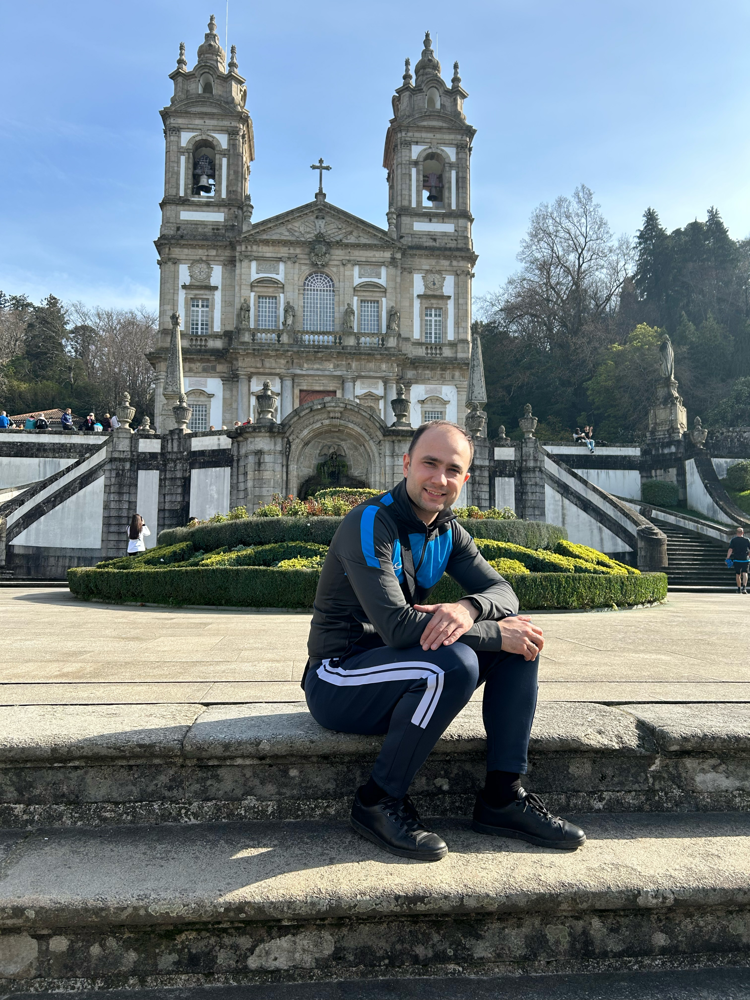
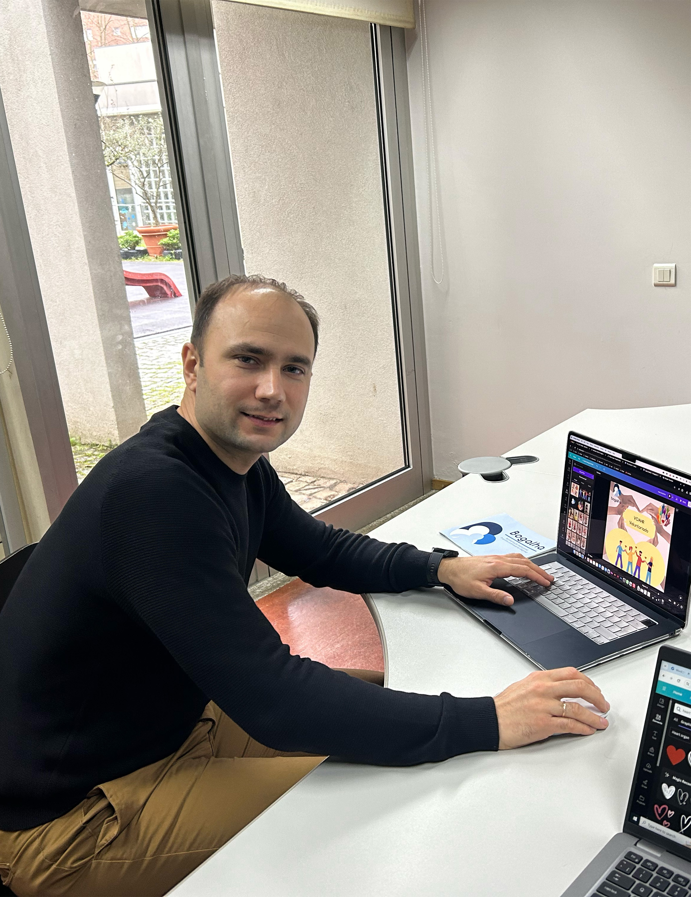
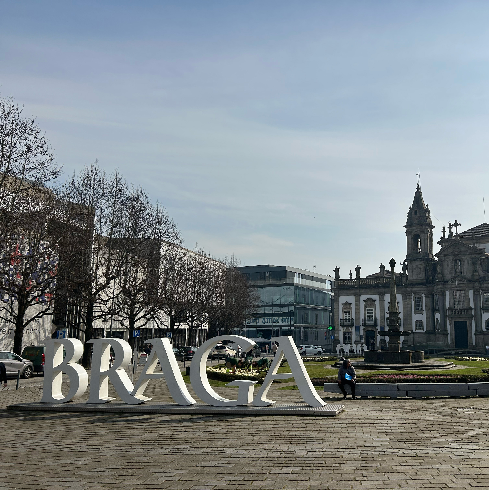
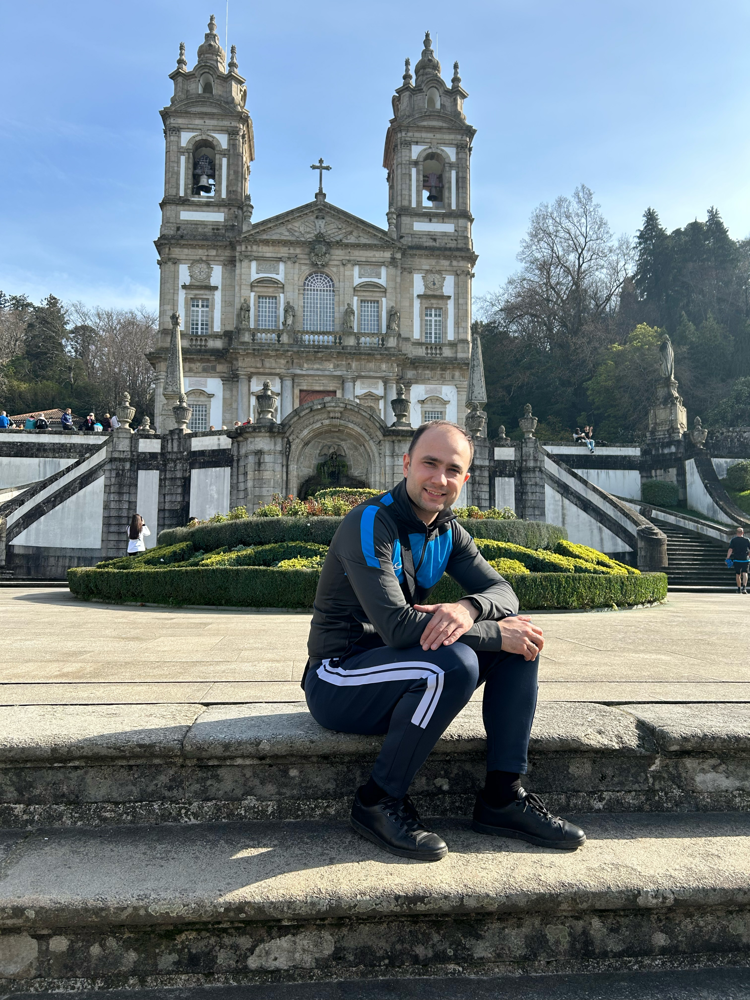
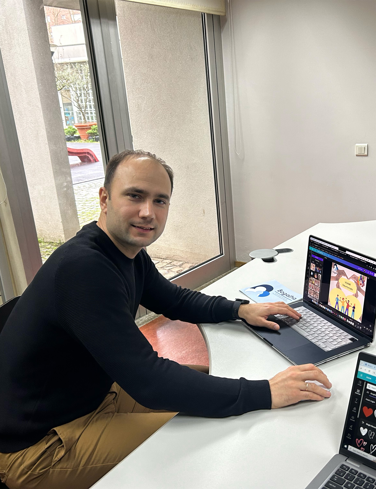
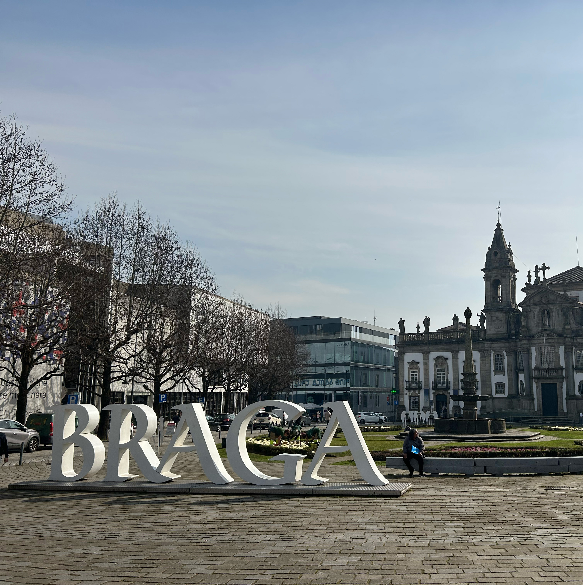

My Work Experience
With more than 3 decades of history, Bogalha is a reference institution in the city of Braga, developing activities and providing services in the areas of education, leisure time, home support and social action. With a very comprehensive range of skills, they work to offer the community complete and integrated support, meeting their needs from early childhood to old age. Recognized for the quality of our services, they are an institution that brings together tradition and innovation.
 




